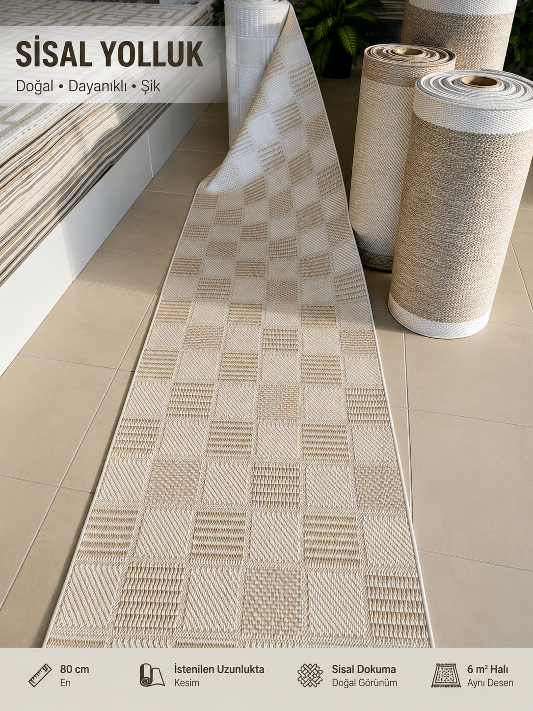
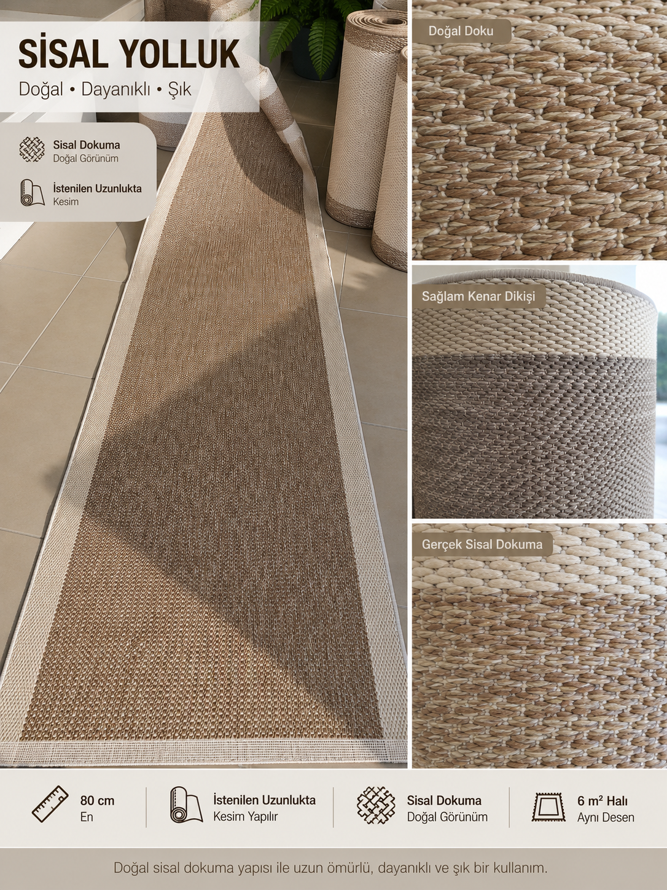
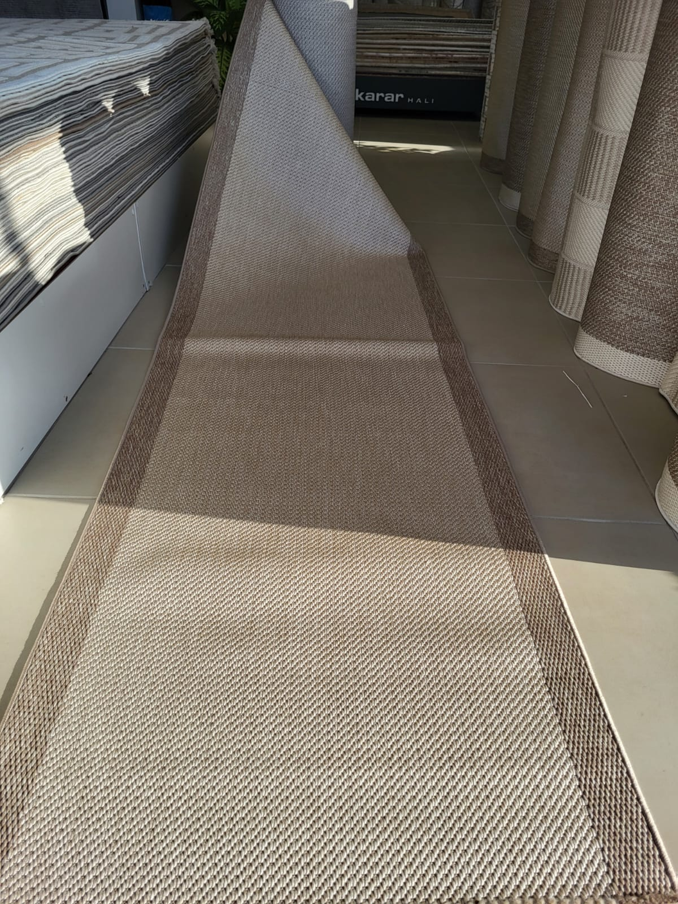

Sur Halı İznik • Bursa
Yaşam alanlarınıza doğal ve modern bir görünüm kazandıran sisal yolluk modellerimizi inceleyebilirsiniz. Modellerimiz 80 cm, 1 m, 1,20 m ve 1,60 m genişlik seçenekleriyle sunulmaktadır. Aynı desende farklı ölçülerde halı ve yolluk seçenekleri hakkında detaylı bilgi almak için bizimle WhatsApp üzerinden iletişime geçebilirsiniz.

80 cm sisal yolluk. Aynı desende farklı ölçü ve halı seçenekleri için bilgi alabilirsiniz.

Sisal yolluğun dokusunu ve örgü detaylarını yakından inceleyebilirsiniz.

Ürünün doğal dokusunu ve renk geçişlerini yakından görebilirsiniz.